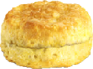

After a very long break from development, the Bread Clicker team has returned
bigger than ever to bring a completely re-written game. The game to the left
might seem different, and that's because Bread Clicker has been 100% implemented
into the webpage. Every pixel you see and line of code responsible for it is
coming from our servers only to ensure fast loading and reliability.
Update 1.8 Live!
by BC Support - March 20, 2020
Since it has been ONE YEAR of Bread Clicker, we have treated you all with
a brand new set of icons in the game!
Bread Clicker Discord
The Bread Clicker Discord server is the place for discussion,
ideas, and behind-the-scenes info on Bread Clicker! Feel free to
join and help us come up with great ideas! discord.gg/Ywksydr
The original bread of Bread Clicker! White bread is the right bread,
said John Adams I think. Your everyday type of bread. Goes well with
ham and cheese, but can be used for just about everything. Gives you
1 DPC.
Being the first purchase you could make in the game, the roll is a
classic bread sporting a nice round shape that was added on March 25,
2019 in update 0.1.1. "I'm on a ROLL!!! Hahahaha!" For the more
adventurous. In the shape of a hemisphere. Line down the middle for
your spreads, like butter. Gives you 2 DPC and
+0.1 DPS. Costs 50 dough.
This tasty treat originates back to March 26, 2019 when it was added
along with the DPS counter and World Record display in update 0.1.2.5.
"Not to be confused for Hole Wheat, Whole Heat, or Hole Heat." Definitely
delicious and healthy. Full of your necessary calories, carbs, and fiber
to get you through the struggles life. Gives you 3 DPC
and +0.4 DPS. Costs 250 dough.
A fine addition to the bread basket, sourdough was released on April
3, 2019 in update 0.4. "It's not even tart." Not fantastically sour,
but whoever made the crosses on top gets their 5-star review from me.
Gives you 4 DPC and +0.5 DPS. Costs 500
dough.
The longest bread currently available. It was released on April 16,
2019 in update 0.8. "HONHONHON OUI OUI BAGUETTE" French delicacy. It
can be used to knock somebody out, I'll give 'em that. How are you
supposed to eat these? Gives you 5 DPC and
+1 DPS. Costs 2500 dough.
Another french delicacy added to the menu on April 25, 2019 in update
0.9.9. "Only the French truly know how to spell corantsanant" Hard to
spell, easy to pronounce. Cwa-sawn. By the way, are you gonna finish
that croissant? Gives you 6 DPC and +1 DPS.
Costs 5000 dough.
At the full release of Bread Clicker 1.0 on April 27, 2019, the classic
fruity bread, banana bread, was added to the game. "A fan favorite,
but not a flan favorite" Butter it, don't bother toasting it! This
fruity delight will set you ahead of the game with its stats. It will
set you back with its price though! (Tax not included) Gives you
8 DPC and +2 DPS. Costs 10000 dough.
The breads keep getting more diverse, but cornbread, added on October
29, 2019 in update 1.3.7, takes it to a new level. "Can also be a muffin."
Made from corn, and it is delicious with as much butter as you can
fit onto it. Makes you feel poor though. Gives you 12 DPC
and +2 DPS. Costs 50000 dough.
After the return of our developers in late autumn, we added the first
seasonal bread on October 23, 2019 in update 1.3.0. "Honestly just the
Halloween bread because of jack-o-lanterns." Tastes good only once a year.
Will probably end up feeling sad after consuming a whole loaf. I speak from
personal experience. Gives you 10 DPC and +2 DPS.
Costs 25000 dough.

Following the tradition of monthly breads, we introduced the thanksgiving
biscuit on November 1, 2019 in update 1.4.0. "Not the English kind, the
American kind." Tastes good only once a year. The pilgrims probably didn't
have these at the first Thanksgiving. They're warm and flaky like a microwaved
bowl of cereal. Gives you 10 DPC and +2 DPS. Costs
25000 dough.
The old classic gingerbread house tradition, typically done in December,
became the seasonal bread in December of 2019 in an unknown update. "Not
to be confused with the cookie, gingerbread cakes are a sweet bread made
with ginger." It's the gingerbread man! Honestly the flavor isn't too much
to brag about, but still pretty good. Gives you 10 DPC and
+2 DPS. Costs 25000 dough.
A long needed addition to Bread Clicker, garlic bread was added to the game
in January of 2019 in an unknown update. "Garlic Cheese Bread: You can't go
wrong with this!" Mmm, I can smell it from miles away! I'd imagine it goes
great with a lot of dishes. Gives you 10 DPC and +2 DPS.
Costs 25000 dough.
To celebrate 1 year of Bread Clicker, we offer a pixelated bread
available for the whole month of March. "An old-school piece of
bread to celebrate 1 year of Bread Clicker!" It's just a little bit
crunchier than the original bread it represents. Gives you
10 DPC and +2 DPS. Costs 25000 dough.
A super tasty and original classic that you just can't pass up on!
This was the first spread that was placed into the game on April 2,
2019 in update 0.1.4. "It is butter. You butter believe it!" Straight
from the farm, slightly salted. A very affordable purchase from the
grocery store or in-game. Gives you 1% bonus on DPS.
Costs 100 dough.
A fruity addition to the game, strawberry jam was the second spread
first available on April 3, 2019 in update 0.4. "It's not jelly, it's
JAM! *Music plays*" Sweet and jammy, just the way everyone likes it.
Careful, may contain animal bones! Gives you 1% bonus on DPS.
Costs 1000 dough.
Half of a PB&J is jelly, and grape jelly has always been the king
of all jelly. This classic staple food was added on April 10, 2019
in update 0.7. "A classic flavor." You truly can't beat the classics!
Gives you 2% bonus on DPS. Costs 5000 dough.
If you are incapable of making lactase, this spread is perfect for you!
Margarine, the substitute for butter, was added on April 17, 2019
in update 0.8.2. "WOW! I can't believe it! IT'S MARGARINE" It's not
real butter. It is growth-stunting chemicals that will give you digestion
problems and chronic but mild headaches. Gives you 2% bonus on DPS.
Costs 10000 dough.
The bee is a rather important thing in our food chain, and they produce
some of the best natural sugars of all insects. Honey was added on November
19, 2019 in update 1.5.3. What can I say? It's honey." It's not the bee's
knees. But hey, it doesn't expire! Don't give it to your newborn, it will
suffocate. Gives you 3% bonus on DPS. Costs 50000 dough.